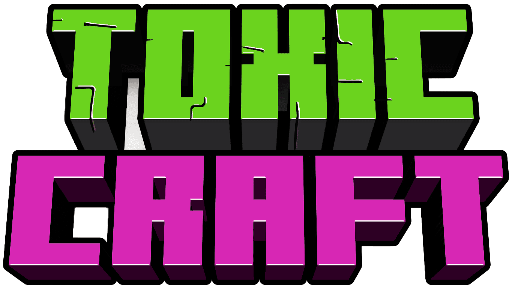

<section class="footer">
    <div class="footer-socials">
        <a href="" title="Discord"></a>
        <a href="" title="Instagram"></a>
        <a href="" title="Telegram"></a>
        <a href="" title="YouTube"></a>
        <a href="" title="TikTok"></a>
    </div>
    <div class="footer-logos">
        
        
    </div>
</section>